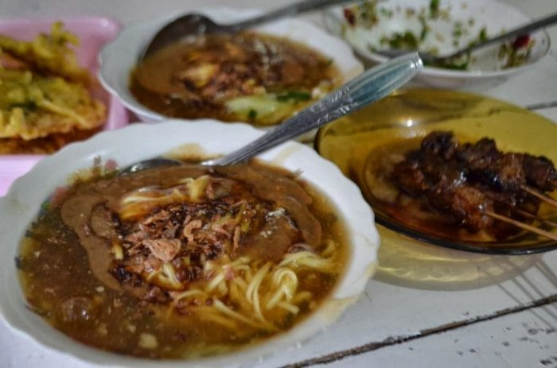

Wonosobo, sebuah kota di Jawa Tengah, Indonesia, dikenal dengan panorama pegunungannya yang memukau dan udara sejuknya. Salah satu ikon utamanya adalah Dataran Tinggi Dieng, yang menyuguhkan berbagai destinasi wisata alam dan budaya seperti Candi Dieng, Telaga Warna, dan Kawah Sikidang. Dieng juga terkenal dengan acara tahunan Dieng Culture Festival yang menampilkan tradisi lokal dan ritual pemotongan rambut anak gimbal.
Selain pesona alamnya, Wonosobo juga menawarkan kuliner khas seperti mie ongklok dan tempe kemul, yang menjadi favorit para wisatawan. Udaranya yang sejuk membuat kota ini menjadi tempat yang ideal untuk bersantai dan menikmati keindahan alam.
Wonosobo bukan hanya destinasi wisata, tetapi juga pusat budaya dan kuliner yang kaya, menjadikannya tempat yang layak untuk dikunjungi bagi siapa saja yang mencari petualangan dan ketenangan. Tertarik untuk menjelajah lebih dalam?